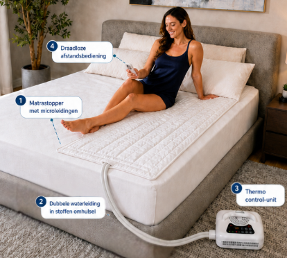
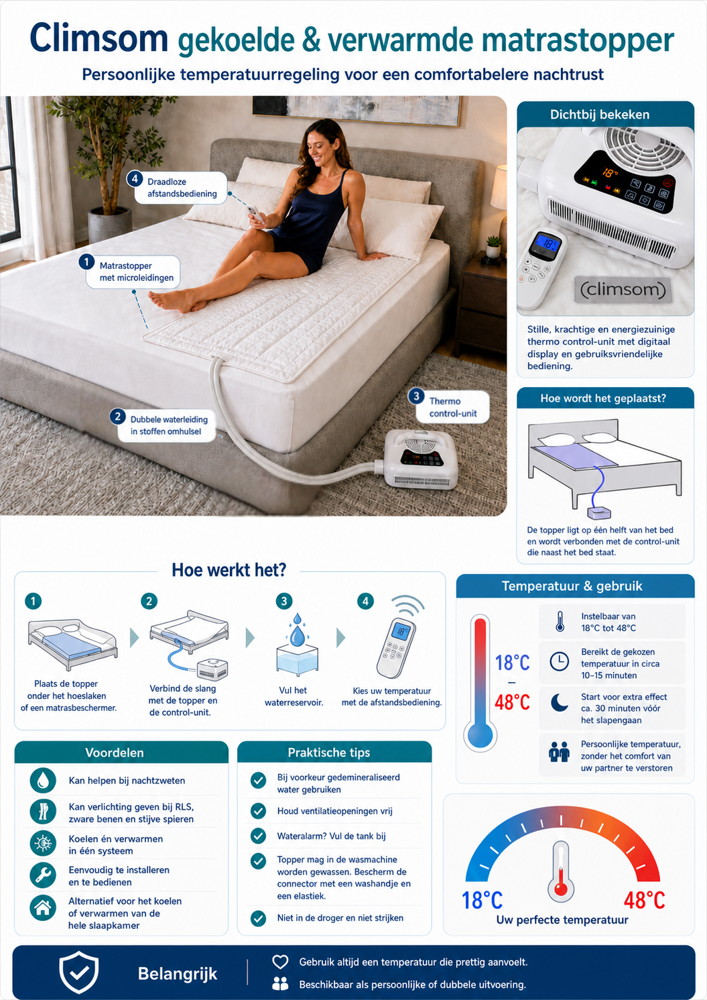
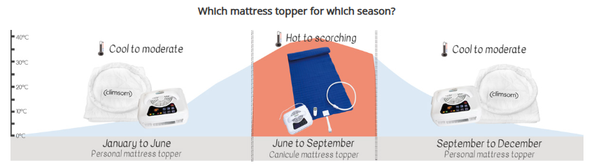
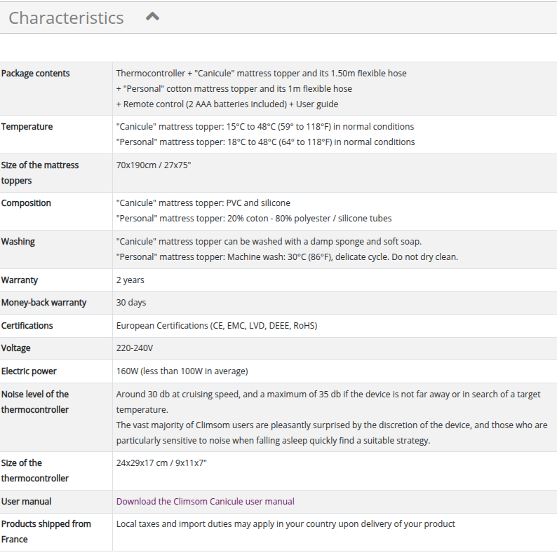
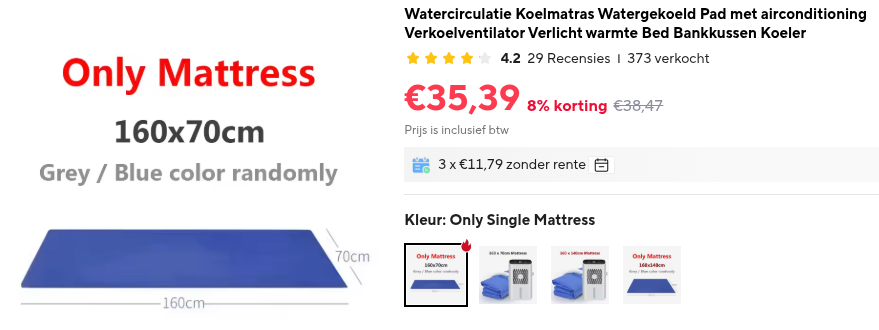

Koel-Matras.html
Er zijn watergekoelde matras-toppers en directe luchtkoeling.
Beide systemen kunnen meestal ook verwarmen.
Met matraskoeling kan ook bij hoge temperaturen comfortabel geslapen worden, zonder te transpireren.

Ervaringen
Adam DavenPort heeft een uitgebreide test gedaan, www.youtube.com/watch?v=WE0hyo6TzMk&t=1490s
Uit zijn onderzoek kunnen een paar conclusies worden getrokken:
- Veel systemen die op de markt worden aangeboden vertellen een veel mooier verhaal dan de werkelijkheid is
- Veel systemen zijn slechts kort op de markt, om vervolgens onder een andere naam/merk opnieuw op de markt te komen
- Lucht bij de voeten ingeblazen is niet prettig voor koeling, maar wel heel prettig voor verwarming
- De meeste systemen werken op basis van adiabatische expansie (verdamping), hetgeen misschien wel een koel matras oplevert, maar zelfs extra warmte en extra vocht produceert in de slaapkamer.
- De meeste van deze systemen produceren, zeker voor een slaapkamer, een behoorlijke hoeveelheid geluid.
- De koeling moet gedurende de nacht steeds milder worden, immers het lichaam zal steeds minder warmte produceren. Zou de koeling blijven op het niveau dat bij het inslapen prettig is, dan wordt je midden in de nacht rillend van de kou wakker.
- Het DIY systeem is by far het beste en goedkoopste systeem
DIY
Het DIY systeem bestaat uit een bak gevuld met (koud) water, een watermatras, een kleine aquariumpomp en een USB adapter.
Dit is het beste systeem en wel om de volgende redenen
- Het heeft van nature het juiste temperatuurverloop over de nacht
- Het systeem is volledig geluidsloos
- Het systeem verbruikt zeer weinig energie, het vermogen ligt op 1 Watt
- Het systeem kost ongeveer €50 - €70


Climson
Deze is verkrijgbaar als eenpersoons en tweepersoons uitvoering en is ook in verkorte versie verkrijgbaar. Deze toppers worden met name bij medische aandoeningen, zoals RLS, toegepast. Geregeld gehoord nadeel van dit apparaat is dat hij lawaai maakt. Hierover zeggen zij zelf "De Climsom unit produceert tussen de 40 en 60 dB (meer dan een koelkast, minder dan een airco)!" Hier wat reviews waarin het geluid wordt genoemd: www.viafora.nl/forum/huis-tuin-en-keuken/verkoelend-dekbed Deze matras is met katoen omkleed en mag in de wasmachine worden gewassen. Ik denk dat ze bedoelen dat de katoenen omkleding mag worden gewassen (zie plaatje hieronder.
In Nederland is de Climson verkrijgbaar bij
www.zorgmatras.com/climsom-gekoelde-matrastopper-persoonlijk-70x190-cm/7010-1 Matras is los verkrijgbaar.



regelaar handleiding: www.climsom.com/ftp2/CLIMSOM_UserGuide_UK_LD.pdf
matras handleiding: www.climsom.com/ftp2/Notice_Climsom_Canicule_EN_2021.pdf
youtube: www.youtube.com/watch?v=dOwL2HrYDrA
Koze CoolSleep
https://kozeliving.com/nl/product-category/coolsleep-serie-matras-koeler/
verbrijgbaar in Nederland
HydroSnooze
https://hydrosnooze.com/products/hydrosnooze-water-cooling-heating-mattress-pad-eu

volgems mij dezelfde

https://www.matras.info/matras-artikelen/nieuw-echt-verkoelend-of-verwarmend-slapen-op-een-water-onderdeken/
Amazone
groot aantal van dit soort dingen, gezien het elektrisch vermogen dat ze verbruiken, moet ik concluderen dat ze niet kunnen werken.
www.amazon.nl/-/en/Mattress-Electric-Sweating-Adjustable-160%C3%9770cm/dp/B0C6KRD547/ref=sr_1_5?crid=2VUQDSBVZZB24&dib=eyJ2IjoiMSJ9.2aelbBTpjCo9LO0J6jmyyME6m30w9ELjzdIf7b4MeI6jVYaSH3_9lWb6S_J2oCi9ordAvSWTBQeC3Bffw5FAlxwaBQ8Hvi4flY1EIDHMwmvRdpmVwTPR3uJ8ocN-5aPwro29Qq-weeeWFXipQsOBQIuzMcHdIbZjRSTXsfEZP2Od5rhESX5bvwq3Goc0LapA6y2PdZYUDdAj8QCGEOuI7VsjDjSRpYh9o-KN6b0_9nDzKGFOprfT5iW98CcdIhEyMv1vGYFC8ez3GcwEN32bN9I9ySlT7vfw8xU6jxLqdWo.h0maxCGu46gD7OiaK_SCUJPe9IXvr_T8Mvv60vSvaTs&dib_tag=se&keywords=koelmatras&qid=1782651720&sprefix=koelmatras%2Caps%2C126&sr=8-5&th=1
China
Hetzelfde als de producten die Amazone verkoopt.
Bedjet BedBlazer
Geen matras, maar gewoon een luchtpijp die warme of koude lucht langs je heen blaast
bedjet.com/?rfsn=732764.7e9bf&utm_source=refersion&utm_medium=affiliate&utm_campaign=732764.7e9bf
Zelf Getest
Matras only besteld, is erg cool.

Het systeem als geheel werkt vermoedelijk op basis van adiabatische verdamping (blazen door een natte doek, of ultrasoon), en dat is helemaal fout, immers, daardoor wordt de lucht in de slaapkamer vochtiger en wordt extra warmte geproduceerd.

nl.aliexpress.com/item/1005004495624622.html?spm=a2g0o.order_list.order_list_main.14.17b079d2TEU6bU&gatewayAdapt=glo2nld
Daling: Pomp Uit, bervoren flesje erin
T_Uitstroom gaat mee, maar is waarschijnlijk niet reeël, omdat deze in de lucht boven het water hangt.
Verbazingwekkend hoe snel de Uitstroom temperatuur echt koud is.


1 = bevroren flesje erin (pomp uit)
2 = pomp aan, je ziet dat in een paar minuten alle warme water uit de matras is verdreven
3 = middag dutje
4 = opstaan
5 = bevroren fles met pomp aan
6 = fles heeft zijn werk gedaan

1= eerste bevroren flesje
2 = tweede bevroren flesje

Dit is bijna een hele nacht,
Voor de sprongen heb ik geen verklaring, (anders gaan liggen?)
De sprong in de luchttemperatuur op ongeveer 1/3, stilvallen van de wind ?
De daling bijna aan het einde is het opstaan.
We zien (en voelen) dat het matras nog steeds koud is: 28 graden Celsius.

Muren buiten water gekoeld

Groot WaterBuffer

Inhoud = 27 liter
1. vullen met vers water, 24.4 °C, dus komt al niet echt koud uit de kraan
2. ruim 1 liter icepack uit de diepvries, temperatuur T_Water daalt van 24.2 °C naar 22.0 °C in 1:05
3. naar Bed, matras is net te doen, veel kouder zou ik het niet willen hebben
4. Opstaan, matras voelt nog lekker koel aan, T_Water is gestegen van 22.0 °C naar 30.3 °C in 7:20 en lijkt nog niet uitgestegen, straks nakijken in echte signaal. T_Lucht = 31.2°C
Dus van 30°C naar 22°C schat ik dat je 4 tot 5 liter icepacks moet hebben
Capaciteit lijkt inderdaad genoeg


Flow is ruim voldoende

1. 0.5 liter icepack erin
2. naar bed, ongeveer 0.5°C stijging
3. opstaan, ongeveer 0.5°C daling
conclusie de flow is hoog genoeg, want een halve graad stijging is heel acceptabel.